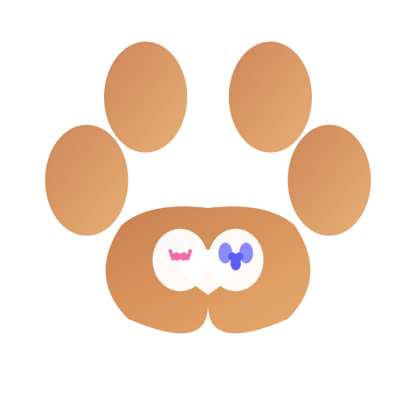
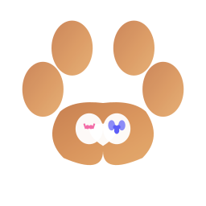
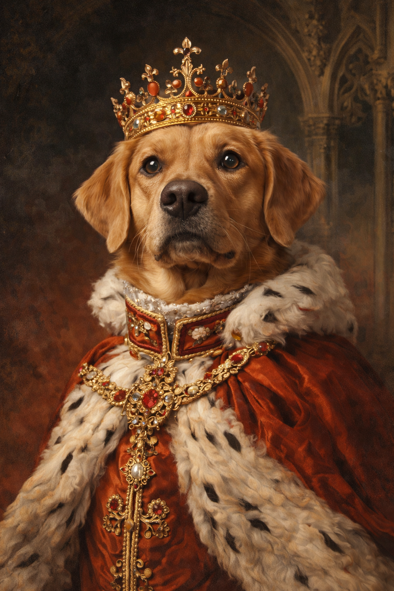
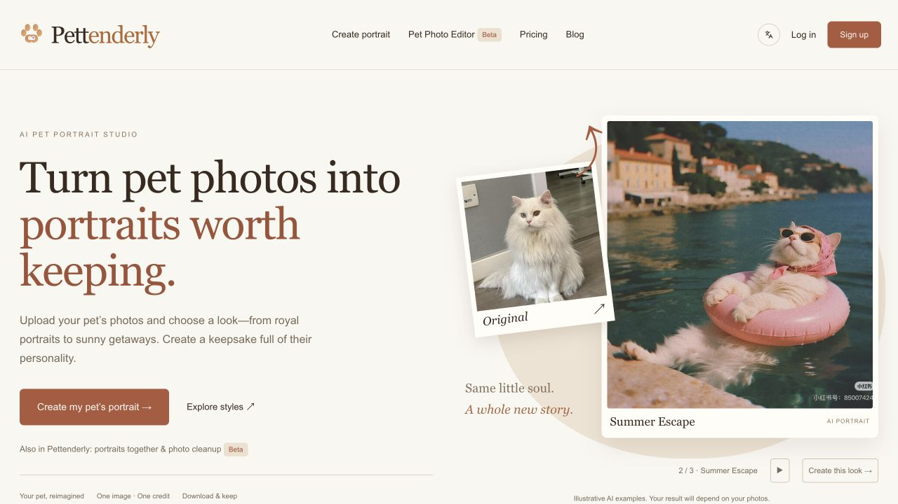
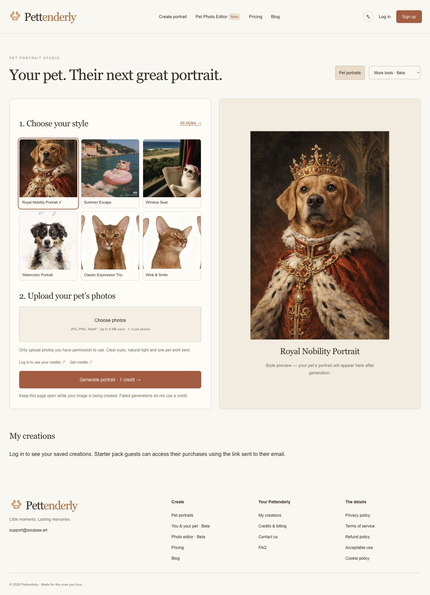
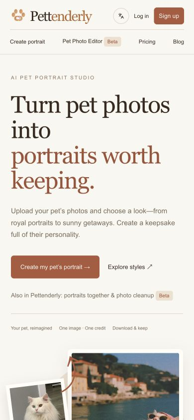
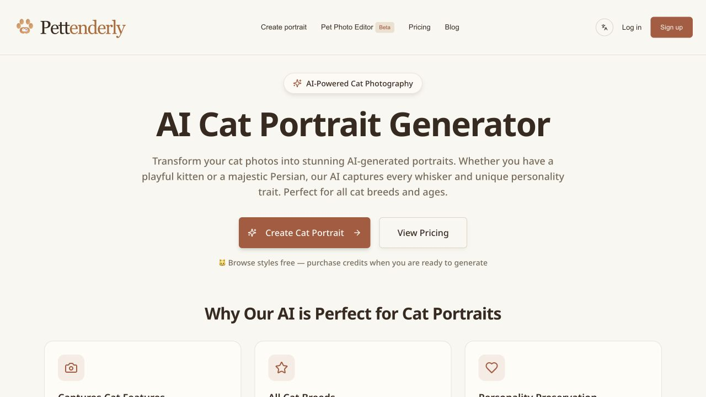

填表常用信息
- 产品名
- Pettenderly
- 官网
- https://pettenderly.com/
- 一句话
- Turn pet photos into portraits worth keeping.
- 公开邮箱
- support@soulpaw.art
- 定价
- Paid · $4.99 / 12 credits · $9.90/month · $79/year
- 猫咪专题
- AI Cat Portrait Generator
上传素材
方形 Logo 用于图标，品牌封面用于横版展示。界面字段使用真实截图；皇家画像是风格示意。点图可查看原文件。


512 × 512 · PNG
下载原文件


256 × 256 · PNG
下载原文件

128 × 128 · PNG
下载原文件

1200 × 630 · PNG
下载原文件


1024 × 1536 · PNG
下载原文件


1280 × 720 · JPEG
下载原文件


1280 × 1771 · JPEG
下载原文件


390 × 844 · JPEG
下载原文件


1280 × 720 · JPEG
下载原文件

文案、平台和记录
生成需要购买积分。人宠合影与照片清理仍为 Beta。未确认的公司与个人信息留空。本次只整理本地资料，未新增对外提交。